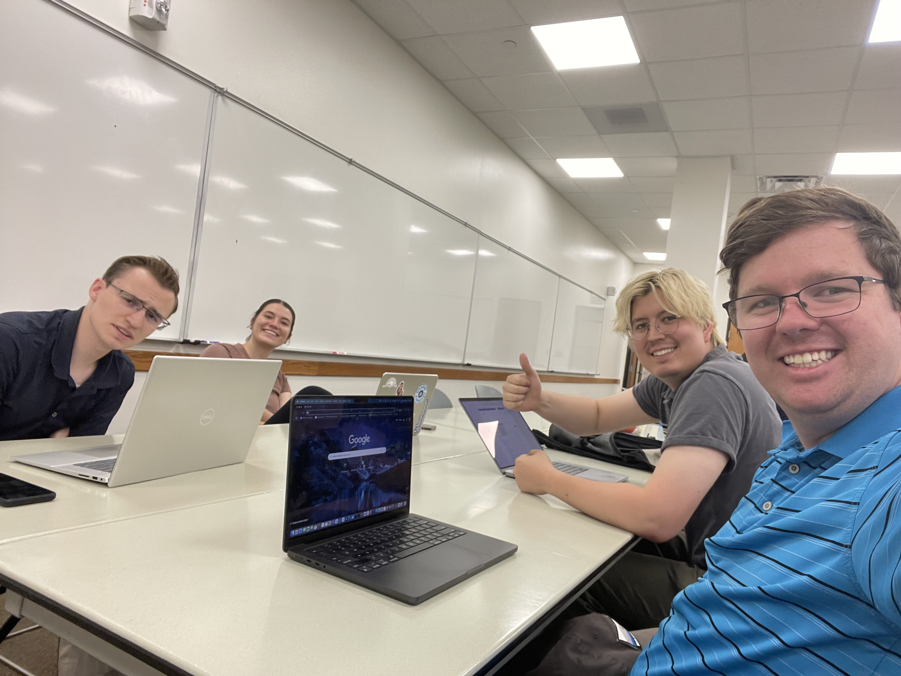

Andrew, Bronwyn, Eton, and I got together to do a project for CMIT Solutions. We evaluated a course educating businesses on how to use AI for business. We also came up with research questions, conducted research, and created videos on how AI can be used for business to help CMIT out. This was an awesome experience with what I consider to be the best team I've ever been apart of during my academic career.